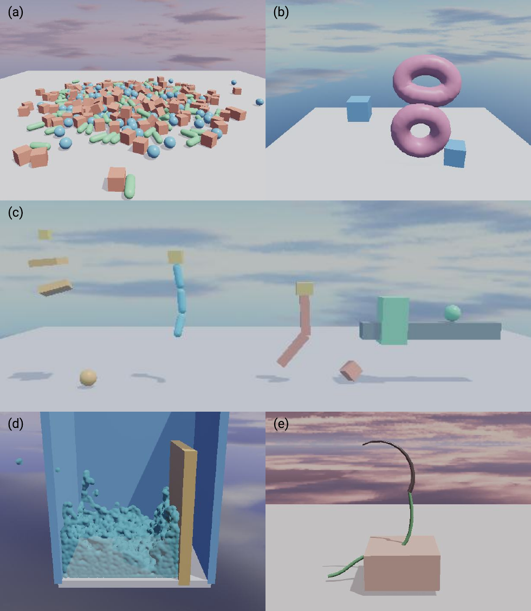

Physics and Constraints#
The physics solver is based on position-based dynamics (PBD), with compliant XPBD-style constraints where needed. It supports both rigid collider and particle-based dynamics. Rigid-body simulation supports sphere, box, capsule, and proxy particle colliders, as well as ball, spherical, hinge, and slider joints. Soft bodies can be represented either by tetrahedral particle models with distance and volumetric constraints, or by meshfree particle models with k-nearest-neighbor distance constraints. Fluids are handled within the same particle framework using density constraints and viscosity, cohesion, surface tension, and vorticity terms. The implementations are based largely on the existing CPU-based PositionBasedDynamics codebase. Strands are modeled using segment, distance, bend, and twist constraints, enabling cable- and thread-like behavior.
{kind=link}

Representative physics scenes: (a) large-scale rigid-body simulation; (b) soft bodies; (c) joints, from left to right: drivable spherical joints, ball joints, hinge joints, and slider joints; (d) fluids; and (e) suturing with a needle, thread, and soft body.#
Physics is authored on the entity world described in Scene Model and Batching. After adding or changing physics components and constraints, prepare and upload the world as described in Runtime Lifecycle before stepping physics.
Rigid Bodies and Colliders#
A RigidBodyComponent
or RigidBodyComponent defines a
static, dynamic, or kinematic body, including its mass, inertia, velocities,
and optional kinematic target. Collision geometry is authored separately with
ColliderComponent or
ColliderComponent. An entity may
have more than one collider. Sphere, box, and capsule primitives are supported,
along with rigid-body proxy particles. Colliders define material properties and
collision layers and masks independently of the rigid body.
C++ |
Python |
|---|---|
RigidBodyComponent body{};
body.bodyType = RigidBodyType::Dynamic;
body.inverseMass = 1.0f;
body.inverseInertiaLocal = {1.0f, 1.0f, 1.0f};
world.setRigidBody(entity, body);
ColliderComponent collider{};
collider.shapeType = ColliderShapeType::Box;
collider.shapeParams = {0.5f, 0.5f, 0.5f, 0.0f};
collider.friction = 0.6f;
world.addCollider(entity, collider);
body = neo.RigidBodyComponent()
body.body_type = neo.RigidBodyType.Dynamic
body.inverse_mass = 1.0
body.inverse_inertia_local = neo.Float3(1.0, 1.0, 1.0)
world.set_rigid_body(entity, body)
collider = neo.ColliderComponent()
collider.shape_type = neo.ColliderShapeType.Box
collider.shape_params = neo.Float4(0.5, 0.5, 0.5, 0.0)
collider.friction = 0.6
world.add_collider(entity, collider)
Soft Bodies#
SoftBodyComponent and
SoftBodyComponent represent
tetrahedral soft bodies with distance and volumetric constraints. The
MeshfreeSoftBodyComponent
and MeshfreeSoftBodyComponent
represent particle-based soft bodies using k-nearest-neighbor distance
constraints. Both expose particle mass and radius, material parameters,
compliance, self-collision, and collision filtering.
For tetrahedral soft bodies, the source can be a regular grid, a tetrahedral mesh, or TetGen files. The regular-grid source is useful for procedural tissue patches, while imported sources preserve an externally prepared volume. Edge and volume compliance control the distance and volume constraints respectively.
C++ |
Python |
|---|---|
SoftBodyComponent softBody{};
softBody.source.kind = SoftBodySourceKind::RegularGrid;
softBody.source.regularGrid.size = {2.0f, 0.3f, 2.0f};
softBody.source.regularGrid.targetParticleSpacing = 0.1f;
softBody.particleMass = 0.01f;
softBody.particleRadius = 0.05f;
softBody.edgeCompliance = 4.5e-3f;
softBody.volumeCompliance = 2.6e-3f;
softBody.material.contact.friction = 0.8f;
softBody.selfCollisionEnabled = true;
world.setSoftBody(tissueEntity, softBody);
soft_body = neo.SoftBodyComponent()
soft_body.source.kind = neo.SoftBodySourceKind.RegularGrid
soft_body.source.regular_grid.size = neo.Float3(2.0, 0.3, 2.0)
soft_body.source.regular_grid.target_particle_spacing = 0.1
soft_body.particle_mass = 0.01
soft_body.particle_radius = 0.05
soft_body.edge_compliance = 4.5e-3
soft_body.volume_compliance = 2.6e-3
soft_body.material.contact.friction = 0.8
soft_body.self_collision_enabled = True
world.set_soft_body(tissue_entity, soft_body)
Fluids#
FluidComponent and
FluidComponent initialize fluids in
the same particle framework. Their material parameters include density,
viscosity, cohesion, surface tension, and vorticity terms.
Fluid particles are initialized from a regular grid whose size and target spacing determine the initial particle distribution. Particle radius and mass must be chosen consistently with the intended scale; fluid material parameters then control contact, viscosity, cohesion, surface tension, vorticity, and the gravity scale.
C++ |
Python |
|---|---|
FluidComponent fluid{};
fluid.source.kind = FluidSourceKind::RegularGrid;
fluid.source.regularGrid.size = {1.0f, 1.0f, 1.0f};
fluid.source.regularGrid.targetParticleSpacing = 0.08f;
fluid.particleRadius = 0.04f;
fluid.particleMass = 0.01f;
fluid.material.viscosity = 1.5f;
fluid.material.cohesion = 0.8f;
fluid.material.surfaceTension = 1.5f;
fluid.material.vorticityConfinement = 0.25f;
fluid.visualColor = {0.16f, 0.56f, 0.96f, 0.4f};
world.setFluid(fluidEntity, fluid);
fluid = neo.FluidComponent()
fluid.source.kind = neo.FluidSourceKind.RegularGrid
fluid.source.regular_grid.size = neo.Float3(1.0, 1.0, 1.0)
fluid.source.regular_grid.target_particle_spacing = 0.08
fluid.particle_radius = 0.04
fluid.particle_mass = 0.01
fluid.material.viscosity = 1.5
fluid.material.cohesion = 0.8
fluid.material.surface_tension = 1.5
fluid.material.vorticity_confinement = 0.25
fluid.visual_color = neo.Float4(0.16, 0.56, 0.96, 0.4)
world.set_fluid(fluid_entity, fluid)
Strands#
StrandComponent and
StrandComponent define rest positions
and stretch, bend, twist, and distance compliance for cable- and thread-like
behavior. Strands support self-collision, collision filtering, and suturing
path tracking.
The rest-position sequence defines the strand topology. Static particle indices anchor selected strand particles; the compliance parameters independently tune stretch/shear, bend, twist, and distance behavior.
C++ |
Python |
|---|---|
StrandComponent strand{};
strand.restPositions = {
{0.0f, 0.0f, 0.0f},
{0.0f, 0.1f, 0.0f},
{0.0f, 0.2f, 0.0f},
};
strand.staticParticleIndices = {0u};
strand.particleMass = 0.01f;
strand.particleRadius = 0.02f;
strand.stretchShearCompliance = 1.0e-4f;
strand.bendCompliance = 1.0e-3f;
strand.twistCompliance = 1.0e-3f;
world.setStrand(strandEntity, strand);
strand = neo.StrandComponent()
strand.rest_positions = [
neo.Float3(0.0, 0.0, 0.0),
neo.Float3(0.0, 0.1, 0.0),
neo.Float3(0.0, 0.2, 0.0),
]
strand.static_particle_indices = [0]
strand.particle_mass = 0.01
strand.particle_radius = 0.02
strand.stretch_shear_compliance = 1.0e-4
strand.bend_compliance = 1.0e-3
strand.twist_compliance = 1.0e-3
world.set_strand(strand_entity, strand)
Joints#
Ball, hinge, spherical, and slider joints connect two rigid-body entities.
Their state objects define local anchors and frames, optional limits, and—where
supported—drive targets and compliance. The World joint-authoring methods
take entity IDs, resolve the corresponding rigid bodies, and require both
entities to be in the same environment.
Note
Author joints through World, rather than directly through the underlying
physics world, so entity ownership and environment membership are validated.
C++ |
Python |
|---|---|
HingeJointState joint{};
joint.bodyA = baseEntity;
joint.bodyB = linkEntity;
joint.localAnchorA = {0.0f, 0.5f, 0.0f};
joint.localAnchorB = {0.0f, -0.5f, 0.0f};
joint.limitEnabled = true;
joint.limitMin = -0.5f;
joint.limitMax = 0.5f;
world.upsertHingeJoint(joint);
joint = neo.HingeJointState()
joint.body_a = base_entity
joint.body_b = link_entity
joint.local_anchor_a = neo.Float3(0.0, 0.5, 0.0)
joint.local_anchor_b = neo.Float3(0.0, -0.5, 0.0)
joint.limit_enabled = True
joint.limit_min = -0.5
joint.limit_max = 0.5
world.upsert_hinge_joint(joint)
Custom Constraints#
The engine also supports user-authored constraints for surgical task-specific simulations. Routed cable constraints enforce a path length across guide points attached to rigid bodies, which can be used to simulate cable-driven robots. Rigid-particle and rigid-strand attachment constraints can connect surgical tools, needles, and threads. Suturing simulation couples strand and rigid proxy particles with soft tissue through path-following constraints.